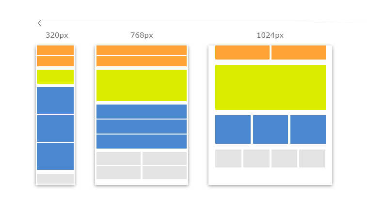
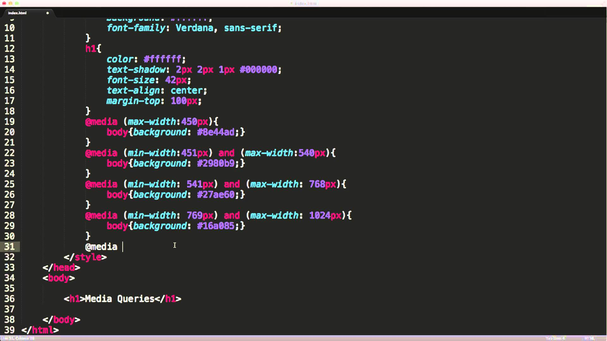

What is a Media Query?
It is what is used to define different style rules for different media types/devices.
We live in a modern world full of different devices to view media content. Technology companies have created so many devies, and what comes along with that is many different screen sizes. CSS3 has made it possible through media queries for web developers to create different layouts for different sized devices.
Examples
Syntax
@media denotes a media query
